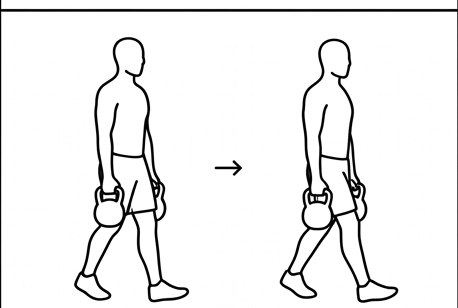

Troncos12 kg
Un plan de fuerza en casa: seis días a la semana con un kettlebell de 12 kg, una banda y una esterilla.
Empezar entrenamientoSesión guiada con cronómetroMismo peso,
otro patrón

Todo lo que necesitas
- Esterilla
- Kettlebell de 12 kg
- Banda elástica
Un plan de 6 días a la semana (más 1 de descanso completo) con tres tipos de sesión que rotan — fuerza, core/banda y patrones a una pierna — todo con el mismo kettlebell de 12 kg. Progresas variando el ejercicio y el control, no subiendo el peso.
Los cinco principios
Todo lo demás en este plan es una aplicación de estas cinco ideas.
Déficit moderado
300–500 kcal/día por debajo de tu mantenimiento. Más rápido no es mejor: pierdes músculo y rendimiento.
Proteína alta
1.6–2.2 g/kg al día. Protege el músculo mientras estás en déficit — el motivo nº1 por el que la gente "se desinfla" al perder peso.
Fuerza, no sólo cardio
La evidencia pide un mínimo de 2–3 sesiones de cuerpo completo por semana para no perder músculo en déficit4. Aquí entrenas 6 porque rotas el estímulo entre tres patrones distintos, no porque cargues más peso.
Progresión de carga
Con un solo kettlebell, progresas con técnica, tempo, rango y descanso — no solo con más peso.
Consistencia antes que intensidad
Un plan fácil que repites 8 semanas gana siempre a uno brutal que abandonas en dos.
Tu semana
Seis días de entrenamiento y uno de descanso completo. El kettlebell se queda siempre en 12 kg — lo que cambia de un día a otro es el patrón de movimiento, no la carga. Ajusta los días exactos a tu horario; lo importante es no repetir el mismo tipo de sesión dos días seguidos.
Calentamiento, 6 minutos, siempre
Antes de cualquiera de los tres días. No es opcional: prepara cadera y hombros para el swing y el press.
Círculos de cadera a cuatro patas — 8 por lado ▸

A cuatro patas, dibuja círculos amplios con una rodilla sin mover la zona lumbar. Despierta la movilidad de cadera que necesitas para la bisagra del swing y la sentadilla.
De pie: apoyado en una pared o una silla si lo necesitas, levanta una rodilla al frente a la altura de la cadera, ábrela hacia el lado y bájala por detrás, dibujando un círculo amplio. Haz las repeticiones hacia fuera y luego hacia dentro. Mantén el tronco quieto: el círculo lo dibuja la rodilla, no la espalda.
Gato-camello — 8 repeticiones ▸

A cuatro patas, alterna arquear y redondear la columna con el movimiento, no de golpe. Moviliza toda la espalda antes de cargarla.
Puente de glúteo — 12 repeticiones ▸

Tumbado, pies apoyados cerca de los glúteos, empuja caderas hacia el techo apretando glúteos arriba. Activa la cadena que más vas a usar en el swing.
Band pull-apart — 15 repeticiones ▸

Banda estirada a la altura del pecho con los brazos extendidos, separa los brazos llevando los omóplatos hacia atrás y vuelve controlado. Enciende la espalda alta antes del remo y el press.
Día A
Fuerza con kettlebell

Un formato clásico de fuerza-resistencia con kettlebell que funciona muy bien para principiantes con base deportiva.
| Ejercicio | Reps | Descanso |
|---|---|---|
| Goblet squat | 8–12 | 60 s |
| Clean and press | 6–12 / lado | 60 s |
| Remo a una mano | 10–15 / lado | 90 s |
| Ejercicio | Reps | Cadencia |
|---|---|---|
| Swing (minuto impar) | 15–20 | descansa hasta el minuto siguiente |
| Thruster (minuto par) | 5–8 | descansa hasta el minuto siguiente |
Primeras 2 semanas: haz solo 3–4 rondas del finisher. Sube a 6 según la progresión.
| Ejercicio | Reps | Descanso |
|---|---|---|
| Flexión de brazos (push-up) | 8–15 | 60 s |
| Band curl de bíceps | 12–15 | 45 s |
Este bloque añade trabajo directo de pecho y brazo.
Cómo se hace cada ejercicio
Goblet squat ▸
Sujeta el kettlebell por los "cuernos" (los lados del asa) contra el pecho. Pies algo más anchos que la cadera, puntas algo hacia afuera. Baja llevando las caderas atrás y abajo, pecho alto, hasta que los codos rocen la parte interna de las rodillas. Empuja por los talones para subir.
Respiración: inhala al bajar, exhala al empujar hacia arriba.
Clean and press ▸

El kettlebell empieza en el suelo entre los pies. Con un tirón corto desde la cadera —no desde el brazo— súbelo pegado al cuerpo y deja que gire sobre la muñeca hasta "aterrizar" en el antebrazo (posición de rack), sin golpearte. Eso es el clean. Desde el rack, empuja el kettlebell sobre la cabeza sin arquear la zona lumbar, terminando con el bíceps cerca de la oreja. Baja controlado.
Para principiantes: es normal tardar 2–4 semanas en pulir el clean. Practícalo despacio y sin prisa antes de buscar fluidez; si se siente brusco en la muñeca, deja que el kettlebell vuelva al suelo entre repeticiones en vez de encadenarlas.
Remo a una mano ▸

Pies al ancho de cadera, rodillas algo flexionadas, inclina el tronco hacia delante en bisagra de cadera manteniendo la espalda plana (sin redondear la zona lumbar). El kettlebell cuelga de un brazo. Tira del codo hacia atrás, pegado a las costillas, hasta que el asa toque el costado; aprieta el omóplato arriba y baja controlado.
Swing ▸
Kettlebell unos 30 cm por delante de los pies. Con bisagra de cadera, agárralo y "hikealo" hacia atrás entre las piernas como un pase de rugby por debajo. Desde ahí, explota extendiendo caderas y apretando glúteos para proyectar el kettlebell hasta la altura del pecho — los brazos solo guían, no levantan el peso con los hombros. Deja que baje por gravedad e inicia la siguiente bisagra sin pausa.
Thruster ▸

Sostén el kettlebell en posición goblet contra el pecho. Baja a una sentadilla completa y, sin pausa en el fondo, aprovecha el impulso de la subida para lanzar el peso en press por encima de la cabeza en un solo movimiento continuo.
Nota: es exigente para el ritmo cardíaco. Al principio prioriza completar el movimiento con buena técnica sobre hacerlo rápido.
Flexión de brazos (push-up) ▸

Manos un poco más anchas que los hombros, cuerpo en línea recta de cabeza a talones. Baja el pecho casi hasta tocar el suelo con los codos a unos 45° del cuerpo (ni pegados ni en cruz) y empuja de vuelta arriba sin que la cadera se hunda ni se eleve.
Band curl de bíceps ▸

De pie, pisa el centro de la banda con ambos pies y sujeta un extremo en cada mano. Codos pegados al cuerpo, flexiona solo el antebrazo llevando la mano hacia el hombro, sin que el codo se adelante ni uses el impulso de la espalda. Baja controlado hasta extender el brazo del todo.
Día B
Core y banda

El complemento del Día A: trabajo unilateral y de estabilidad del core, pensado para dar estabilidad real al core (no para "quemar" la zona — eso depende de la nutrición).
| Ejercicio | Reps | Descanso |
|---|---|---|
| Press de suelo a una mano | 8–10 / lado | 60 s |
| Remo inclinado con banda | 12–15 | 60 s |
| Kettlebell halo | 8–10 vueltas | 60 s |
| Ejercicio | Reps | Descanso |
|---|---|---|
| Dead bug | 8–10 / lado | 30 s |
| Plancha lateral | 20–30 s / lado | 30 s |
| Suitcase hold con kettlebell | 30 s / lado | 30 s |
| Russian twist con kettlebell | 20–24 totales | 30 s |
| Mountain climbers | 20 totales | 90 s antes de repetir ronda |
| Ejercicio | Reps | Descanso |
|---|---|---|
| Band chest press | 12–15 | 45 s |
| Band triceps extension | 12–15 | 45 s |
Entre este bloque y el push-up + curl del Día A, pecho y brazo quedan cubiertos 2 veces por semana cada uno — la dosis mínima recomendada para progresar.
Cómo se hace cada ejercicio
Press de suelo a una mano ▸

Túmbate boca arriba en la esterilla con las rodillas flexionadas y los pies apoyados en el suelo. Coge el kettlebell con una mano y colócalo junto al pecho: la parte de atrás del brazo apoyada en el suelo, el codo a unos 45° del cuerpo y la bola del kettlebell descansando sobre el antebrazo. El otro brazo, estirado en el suelo hacia un lado, te da estabilidad.
Empuja el kettlebell hacia el techo hasta estirar el brazo, con la muñeca recta y la pesa justo encima del hombro. Baja despacio hasta que el codo vuelva a tocar el suelo, sin dejarlo caer, y repite.
El suelo limita el rango de movimiento y protege el hombro — por eso es una buena entrada al press para alguien nuevo en kettlebell.
Remo inclinado con banda ▸

De pie, pisa el centro de la banda con los dos pies separados a la anchura de las caderas y sujeta un extremo en cada mano. Flexiona un poco las rodillas e inclina el tronco hacia delante desde la cadera, con la espalda plana, hasta dejarlo a unos 45°. Los brazos cuelgan estirados bajo los hombros.
Tira de los codos hacia atrás, pegados al cuerpo, hasta que las manos lleguen a la cintura, juntando los omóplatos. Vuelve despacio hasta estirar los brazos sin perder la inclinación ni redondear la espalda.
Kettlebell halo ▸

De pie, sujeta el kettlebell boca abajo por los cuernos cerca de la barbilla y llévalo en un círculo completo alrededor de la cabeza, manteniéndolo cerca del cráneo durante todo el recorrido. Cambia de dirección cada pocas repeticiones.
Trabaja la movilidad de hombro y el core de forma anti-rotación, con poco riesgo al ser un movimiento lento y controlado.
Dead bug ▸

Tumbado boca arriba, rodillas y caderas a 90°, brazos apuntando al techo. Baja brazo y pierna opuestos a la vez, casi hasta tocar el suelo, manteniendo la zona lumbar pegada a la esterilla todo el tiempo (sin que se arquee). Vuelve al centro y alterna.
Es el ejercicio base para aprender a estabilizar el core antes de moverlo — la habilidad detrás de todos los demás ejercicios de este bloque.
Plancha lateral ▸

Apóyate sobre el antebrazo y el borde del pie, cuerpo en línea recta de cabeza a talones, cadera elevada sin caer ni subir en exceso. Respira con normalidad mientras aguantas.
Suitcase hold con kettlebell ▸

De pie, con los pies a la anchura de las caderas, sujeta el kettlebell con una mano junto al costado y el brazo estirado. La otra mano queda libre.
Aguanta el tiempo indicado con el cuerpo totalmente recto: hombros nivelados, sin inclinarte hacia el lado del kettlebell ni compensar hacia el contrario. Aprieta el abdomen y los glúteos y respira con normalidad. Después cambia el kettlebell de mano.
Es anti-inclinación lateral: el core trabaja para que el peso no te doble hacia un lado. Para más reto, camina despacio en línea recta (suitcase carry).
Russian twist con kettlebell ▸

Sentado con rodillas flexionadas, talones apoyados (o ligeramente elevados para más reto), inclina el torso hacia atrás unos 45° manteniendo la espalda recta, no redondeada. Sujeta el kettlebell con ambas manos y gíralo de un lado al otro de la cadera, tocando el suelo si llegas, sin perder la postura del torso.
Es un giro continuo, no un bloque de reps solo hacia un lado: cada toque a un lado cuenta como una repetición, así que automáticamente reparte el mismo trabajo en ambos lados.
Mountain climbers ▸

En plancha alta, lleva una rodilla al pecho y luego la otra, alternando a ritmo controlado, cadera baja y estable (no la subas como un techo). Es el componente cardiovascular del circuito.
Band chest press ▸

Ancla la banda detrás de ti a la altura del pecho (una puerta, una barra, o alguien sujetándola). De pie, un paso por delante del anclaje para generar tensión, empuja ambas manos hacia delante como en un press de banca, extendiendo los brazos sin bloquear los codos de golpe. Vuelve controlado sin dejar que la banda te arrastre hacia atrás.
Sin anclaje: pasa la banda por la espalda, a la altura de los omóplatos y por debajo de las axilas, y sujeta un extremo en cada mano junto al pecho. Empuja igual hacia delante; tu propia espalda hace de anclaje. Agarra la banda más corta para más resistencia o más larga para menos. No sirve pisarla: tiraría hacia abajo y no trabajaría el pecho.
Band triceps extension ▸

Ancla la banda baja, detrás o bajo un pie. Sujeta el extremo con ambas manos por detrás de la cabeza, codos apuntando al techo y pegados a las orejas. Extiende los brazos hacia arriba hasta casi estirarlos del todo, sin que los codos se abran hacia los lados, y vuelve controlado flexionando de nuevo.
Día C
Una pierna y rotación

El tercer patrón de tu semana: equilibrio, zancadas y anti-rotación. Mismo kettlebell de 12 kg que los otros dos días — aquí el reto es el control, no el peso.
| Ejercicio | Reps | Descanso |
|---|---|---|
| Reverse lunge con kettlebell | 8–10 / lado | 60 s |
| Kettlebell halo | 8–10 vueltas | 60 s |
| Peso muerto a una pierna | 8–10 / lado | 90 s |
| Ejercicio | Reps | Descanso |
|---|---|---|
| Band woodchopper | 10–12 / lado | 30 s |
| Renegade row | 8–10 / lado | 30 s |
| Plancha con toque de hombro | 16 totales | 90 s antes de repetir ronda |
Cómo se hace cada ejercicio
Reverse lunge con kettlebell ▸

Sostén el kettlebell en posición goblet contra el pecho. Da un paso atrás largo y baja la rodilla trasera casi hasta rozar el suelo, manteniendo el torso vertical. Empuja con el talón delantero para volver a la posición inicial.
Kettlebell halo ▸
De pie, sujeta el kettlebell boca abajo por los cuernos cerca de la barbilla y llévalo en un círculo completo alrededor de la cabeza, manteniéndolo cerca del cráneo durante todo el recorrido. Cambia de dirección cada pocas repeticiones.
Trabaja la movilidad de hombro y el core de forma anti-rotación, con poco riesgo al ser un movimiento lento y controlado — buena entrada a los gestos por encima de la cabeza si el clean and press todavía se siente brusco.
Peso muerto a una pierna ▸
En apoyo sobre una pierna, inclina el torso hacia delante mientras la pierna libre se extiende hacia atrás, manteniendo caderas y hombros cuadrados — como una "T" horizontal. El kettlebell cuelga del brazo contrario a la pierna de apoyo y baja hacia el suelo sin que el tronco rote.
Para principiantes: es el ejercicio del plan que más pide equilibrio. Apóyate con la mano libre en una pared o silla las primeras semanas si lo necesitas — no resta nada al trabajo real del ejercicio.
Band woodchopper ▸

De pie, con los pies algo más abiertos que la cadera. Pisa un extremo de la banda con el pie izquierdo y sujeta el otro extremo con las dos manos juntas junto a la rodilla izquierda, con las rodillas un poco flexionadas y el torso girado hacia ese lado.
Tira en diagonal cruzando el cuerpo, de abajo a la izquierda hacia arriba a la derecha, hasta que las manos queden por encima del hombro derecho con los brazos casi estirados. La rotación sale del core y de las caderas —deja que gire también el pie de atrás—, no solo de los brazos. Vuelve controlado a la rodilla izquierda, resistiendo que la banda te devuelva de golpe.
Importante: para el "lado derecho", pisa con el pie izquierdo y sube hacia el hombro derecho, como se describe arriba. Para el "lado izquierdo", al revés: pisa con el pie derecho y sube hacia el hombro izquierdo. Cambia de pie entre una serie y otra para no entrenar dos veces el mismo lado.
Renegade row ▸

En posición de plancha alta, con una mano apoyada en el suelo y la otra sujetando el kettlebell, rema el kettlebell hacia la cadera manteniéndote lo más quieto posible. El reto real es que las caderas no giren hacia el lado que rema. Baja controlado y repite; cambia de mano a mitad de serie.
Plancha con toque de hombro ▸

En plancha alta con los pies algo más separados de lo habitual para más estabilidad, lleva una mano a tocar el hombro contrario y vuelve a apoyarla en el suelo, alternando lados sin que la cadera se balancee de un lado a otro.
Es anti-rotación: el core trabaja para que el tronco no gire, en posición de plancha y sin ningún equipo.
Enfriamiento, 5 minutos
Al terminar cualquiera de los tres días, antes de ducharte.
Estiramiento de flexor de cadera — 30 s / lado ▸

Postura de zancada baja (una rodilla en el suelo), empuja la cadera hacia delante sin arquear la espalda. Libera la tensión que acumula la cadera tras swings y squats.
Estiramiento de isquiotibiales — 30 s / lado ▸

Sentado o de pie, pierna extendida, inclínate hacia delante desde la cadera sin redondear en exceso la espalda baja.
Rotaciones torácicas — 8 / lado ▸

A cuatro patas, con las manos justo debajo de los hombros y las rodillas debajo de las caderas. Lleva una mano detrás de la cabeza, con los dedos en la nuca, y baja ese codo hacia el brazo de apoyo.
Desde ahí, gira el pecho abriéndote hacia el lado del codo libre hasta que apunte al techo, siguiéndolo con la mirada. Las caderas y la mano de apoyo no se mueven: el giro sale solo de la parte alta de la espalda. Vuelve despacio y repite.
Seis semanas, mismo peso
El kettlebell se queda en 12 kg todo el ciclo y después de él. Progresas en técnica, tempo, densidad y variedad de patrones — no en peso.
Semanas 1–2: aprende
Aprende el patrón de cada uno de los tres días. Finisher del Día A a 3–4 rondas. La técnica manda sobre la velocidad o el número de reps.
Semanas 3–4: sube reps
Sube al rango alto de repeticiones indicado en las tablas. Finisher del Día A a 5 rondas. En el Día C, reduce cuánto te apoyas en la pared en el peso muerto a una pierna.
Semanas 5–6: densidad
Finisher del Día A completo, 6 rondas. Recorta los descansos 10–15 s en el Bloque 1 de los tres días. Añade una pausa de 1–2 s en el punto más duro de cada ejercicio (el fondo del squat, el codo arriba en el remo) — más control, mismo peso.
Después: vuelve a empezar
Repite el ciclo cambiando el orden de los ejercicios dentro de cada bloque, recorta algo más los descansos, o añade una ronda extra al finisher. Con un solo kettlebell de 12 kg hay años de progresión combinando técnica, tempo, densidad y variedad de patrones antes de que el peso sea el límite.
Suficiente para perder grasa de forma sostenida sin sacrificar rendimiento en los entrenamientos ni masa muscular.
Nutrición: lo que mueve la grasa
El entrenamiento de este plan construye fuerza y preserva músculo. La pérdida de grasa —también la abdominal— la decide el balance calórico. Cifras orientativas:
Repartida en 4–5 tomas de 30–40 g5. Es el factor nº1 para no perder músculo en déficit.
Cardio de baja fatiga que suma al déficit sin interferir con la recuperación de los días de fuerza.
Es cuando se repara el tejido entrenado y se regulan las hormonas del apetito.
Seguimiento de 6 semanas
Marca cada sesión completada. Se guarda en este dispositivo y navegador, así que puedes volver cada semana.
| Semana | A | B | C | A | B | C |
|---|
A = fuerza con kettlebell · B = core y banda · C = una pierna y rotación. El domingo de descanso no lleva casilla.
Seguridad
No existe la quema localizada
La grasa abdominal no se “quema” haciendo abdominales. Es lo más importante de todo el plan: ningún ejercicio localizado reduce la grasa de la zona que trabaja. Un metaanálisis de 2022 con más de 1.000 participantes y una revisión de 2021 con 13 estudios (1.158 personas) no encontraron diferencias en la pérdida de grasa localizada entre el lado entrenado y el no entrenado, sin importar el ejercicio usado1,2. Un ensayo controlado de 12 semanas tampoco halló más reducción de grasa abdominal en el grupo que además de dieta hacía ejercicios de core, frente al grupo que solo hacía dieta3.
¿Qué funciona entonces? Tu cuerpo decide dónde tirar de las reservas de grasa según genética y hormonas, no según qué músculo mueves1. Lo que sí reduce la grasa en general —incluida la abdominal— es un déficit calórico sostenido combinado con entrenamiento de fuerza de cuerpo completo para no perder músculo mientras pierdes grasa. El trabajo de core de este plan está aquí para darte un abdomen fuerte y estable, no para "quemarlo" directamente — eso lo hace la dieta.
Domina la bisagra de cadera antes del swing con velocidad
Practica primero el peso muerto con kettlebell despacio; el swing es esa misma bisagra con potencia.
Con 12 kg todavía tienes mucho margen de progreso sin más peso
Técnica, rango completo, tempo y menos descanso son formas válidas de progresar.
El domingo de descanso no es negociable, aunque te sientas bien
Es tan parte del plan como cualquiera de los seis días de entreno.
Dolor agudo o que se irradia no es lo mismo que fatiga muscular
Si aparece, detén el ejercicio y, si hace falta, salta una sesión aunque no sea domingo — revisa la técnica antes de continuar.
Calienta siempre, 6 minutos mínimo
Incluso los días con prisa. Es lo que separa un swing seguro de una lumbalgia.